Processing and QC of SILAC data
Tom Smith
2022-05-03
SILAC.RmdPreamble
Stable Isotope Labelling by/with Amino acids in Cell culture (SILAC) is a form of quantitative proteomics where different conditions are quantified in the same run by differential metabolic labelling of proteins using amino acids containing stable isotopes (Ong et al. 2002). A typical SILAC experiment involved growing cells in two different types of SILAC media, one containing ‘light’ arginine and lysine, and the other containing ‘heavy’ arginine and lysine. Over time the cells incorporate these amino acids into their proteins, changing the mass of the peptides detected by LC-MS. SILAC was initially designed to provide pairwise comparisons between cell cultures, but has now been extended to more than two labels and even whole organisms (Krüger et al. 2008).
This elegant experimental design enables quantification of peptide/protein abundance ratios between conditions with very little technical variation, since the samples from separate conditions are pooled as early as possible in the sample handling process. For example, cell cultures can be treated with drug/control and then collected and pooled together for all downstream protocol steps. The use of different isotope labels has been extended to study the protein turnover (e.g switch from one label to another) in pulsed SILAC, and relative turnover between conditions (e.g two condition on the same label and then switch each condition to a different label; requires triple SILAC).
The analysis of SILAC data is relatively straightforward, since technical noise is low and normalisation is not normally required. Typically, one is interested in the intensity (peak area or peak height depending on your PD settings) ratio of the light (L) and heavy (H) MS peaks for a given peptide. This ratio forms the quantification value which we wish to perform statistical tests and exploratory analysis on.
Asssessing the SILAC isotope incorporation rate
Before performing a typical SILAC experiment, it is necessary to confirm complete (e.g > 95%) incorporation of the supplemented isotopically labelled amino acids into the cellular proteome.
We do this with camprotR::estimate_incorporation() function below, which wraps multiple camprotR functions to parse and filter the input data and then estimate the incorporation at peptide and protein level.
Calculating the incorporation for a given peptide is simple, e.g H/(H+L) for a typical two label experiment. However, for very highly incorporated samples, the true intensity of the L peptide ions will be close to zero, which can lead to erroneous assignment of other ions to the L peptide. estimate_incorporation() also supports the calculation of incorporation from defined mixes of heavy and light labelled material, which makes the estimation of incorporation rate more robust, since both isotopes should exist for all peptides. Here, heavy and light labelled cells were mixed 1:1.
Importantly, note that there is a good correlation between the light and heavy intensities, regardless whether either or both isotopes were from a spectrum match, or one peptide isotope was identified based on the expected ‘mass shift’ relative to the peptide-spectrum match (PSM) for the cognate isotope. This indicates that identified isotope pairs are correct and the the quantification values are trustable.
# The cRAP fasta file for this experiment is part of this package.
# For a real experiment, make sure to the use the same cRAP fasta that was used in PD
crap_fasta_inf <- system.file(
"extdata", "cRAP_20190401.fasta.gz",
package = "Proteomics.data.analysis"
)
# psm_silac_p4 and pep_silac_p4 are loaded from the `camprotR` package
incorporation_results <- camprotR::estimate_incorporation(
# can replace with PD output using read.delim(PSMs.txt)
psm_input = psm_silac_p4,
# can replace with PD output using read.delim(PeptideGroups.txt)
peptide_input = pep_silac_p4,
crap_fasta = crap_fasta_inf,
mix = 1 # This incorporation test was performed with a 1:1 H/L mix
)
print(incorporation_results$HL_correlation)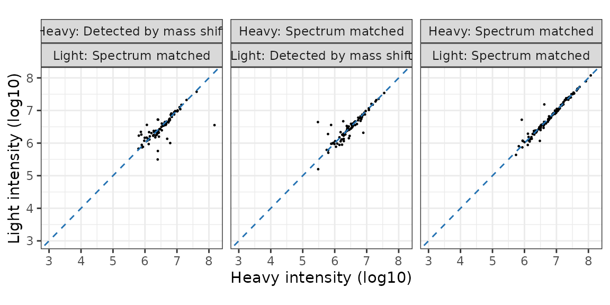
The median observed incorporation for the mixed sample is 50.8 at the peptide-level and 50.5 at the protein level. Correcting for the mixing proportions this gives us incorporation rate estimates just over 100%, which suggests the true incorporation rate is likely to be very close to 100%. We are only using a toy data set here with 100 proteins. With the full data, we would get a more accurate estimate.
print(incorporation_results$peptide_incorporation)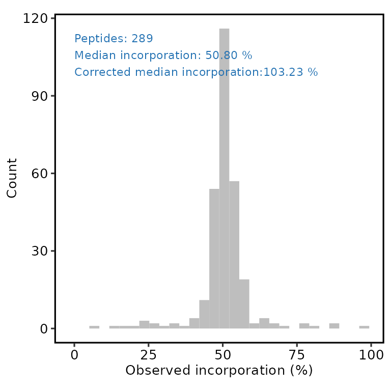
print(incorporation_results$protein_incorporation)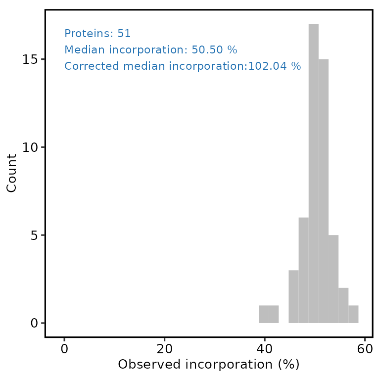
Processing and QC of SILAC experimental data
Now, onto some experimental data. Here, we process data from an OOPS (Queiroz et al. 2019) experiment designed to identify proteins that are significantly enriched upon UV crosslinking (CL) vs non-crosslinked control cells (NC). RNA-binding proteins (RBPs) should be much more abundant in CL samples, since this covalently crosslinks the RBPs to RNA, and retains them in the OOPS interface, from which the sample is taken.
In total, we have 4 SILAC runs, representing 4 separate plates of U-2 OS cells. Two plates (replicate 1 & 2) were Heavy for CL and two plates (replicates 3 & 4) were Light for CL. This is called a ‘label’ swap/switch and helps to ensure the results are independent of the labelling scheme.
The first step is to read in the data. As part of this, we will remove contaminant proteins and features without quantification data. These were defined using the cRAP database. Below, we parse the cRAP FASTA to extract the IDs for the cRAP proteins, in both ‘cRAP’ format and Uniprot IDs for these proteins.
# Load the cRAP FASTA used for the PD search
crap_fasta <- Biostrings::fasta.index(crap_fasta_inf, seqtype = "AA")
# Extract the non-cRAP UniProt accessions associated with each cRAP protein
crap_accessions <- crap_fasta %>%
pull(desc) %>%
stringr::str_extract_all(pattern="(?<=\\|).*?(?=\\|)") %>%
unlist()We can then supply these cRAP protein IDs to camprotR::parse_features which will parse the PD output and remove features which may originate from contaminants, as well as features which don’t have a unique master protein. See ?parse_features for further details, including the removal of ‘associated cRAP’. parse_features will output messages about the number of features at each stage in the filtering.
# These files are part this package
replicates <- 1:4
pep_infiles <- file.path('OOPS_SILAC', paste0('OOPS_', replicates, '_PeptideGroups.txt'))
names(pep_infiles) <- replicates
print(pep_infiles)
#> 1 2
#> "OOPS_SILAC/OOPS_1_PeptideGroups.txt" "OOPS_SILAC/OOPS_2_PeptideGroups.txt"
#> 3 4
#> "OOPS_SILAC/OOPS_3_PeptideGroups.txt" "OOPS_SILAC/OOPS_4_PeptideGroups.txt"
# We use lapply below to run the same function on each element of the list pep_data
# This is easier than running a for loop since the output is a new named list
pep_data_parsed <- lapply(
pep_infiles, function(infile) { # define the function to run
infdata <- read.delim(
system.file("extdata", infile, package = "Proteomics.data.analysis"))
parse_features(infdata,
silac = TRUE,
level = 'peptide',
crap_proteins = crap_accessions,
unique_master = FALSE)
}
)Next, we add new columns to describe the intensities with respect to the CL and NC conditions, based on how H & L map to CL & NC for each replicate.
# Define a function name to take the replicate number and annotate the data
annotate_parsed_data <- function(rep_n){
pep_data <- pep_data_parsed[[rep_n]]
# Identify the column names for the light and heavy intensities
# (these names are not consistent between samples, yours may be different!)
abundance_light_col <- grep('Abundance.*.Light.Sample', colnames(pep_data), value = TRUE)
abundance_heavy_col <- grep('Abundance.*.Heavy.Sample', colnames(pep_data), value = TRUE)
# Label-swap info defines whether heavy or light is CL
cl_col <- ifelse(rep_n %in% 1:2, abundance_heavy_col, abundance_light_col)
nc_col <- ifelse(rep_n %in% 1:2, abundance_light_col, abundance_heavy_col)
pep_data <- pep_data %>%
# Add new columns with CL or NC intensities
mutate('CL' = !!sym(cl_col), # !!sym(var) allows us to supply a string var for tidy evalulation
'NC' = !!sym(nc_col),
Replicate = rep_n) %>%
# And subset to these columns
select(Master.Protein.Accessions,
Sequence,
Modifications,
CL,
NC,
Replicate)
return(pep_data)
}
# Apply the function to all peptide data.frames
annot_pep_data_parsed <- lapply(names(pep_data_parsed), # annotate_parsed_data function using the name
annotate_parsed_data)
# Re-annotate with the names
names(annot_pep_data_parsed) <- names(pep_data_parsed)Now that we have added the replicate number as a column, we can bind together the rows from all replicates to keep all our data in a single data.frame.
abundance_data_complete <- do.call('rbind', annot_pep_data_parsed) %>%
remove_rownames()Next, we calculate the CL/NC ratio using camprotR::get_ratio, which will also add a missing column to describe whether one of the quantification values is missing. camprotR::get_ratio expects the quantification values to be on a log scale.
ratios <- abundance_data_complete %>%
filter((is.finite(CL) | is.finite(NC))) %>% # Retain peptides where either CL and/or NC is finite
mutate(CL = log2(CL), NC = log2(NC)) %>% # log2-transform quantification
get_ratio(CL, NC, bind = TRUE) # Obtain CL/NC ratioBelow, we tally and plot the missing values per replicate for each method. Note that ~40% of peptides have a missing quantification value and it’s much more likely to be missing in NC than CL. This is what we expect since the OOPS method is designed to capture RBPs that are UV crosslinked to RNA, so without crosslinking, there should be very little protein present in the interface.
# Tally the missing values
missing_tallies <- ratios %>%
group_by(missing) %>%
tally()
missing_tallies %>%
ggplot(aes(x = missing, y = n)) +
theme_camprot(border = FALSE) +
geom_bar(stat = 'identity', colour = 'grey50') +
labs(y='Peptides', x='') +
theme(axis.text.x=element_text(angle=45, vjust=1, hjust=1))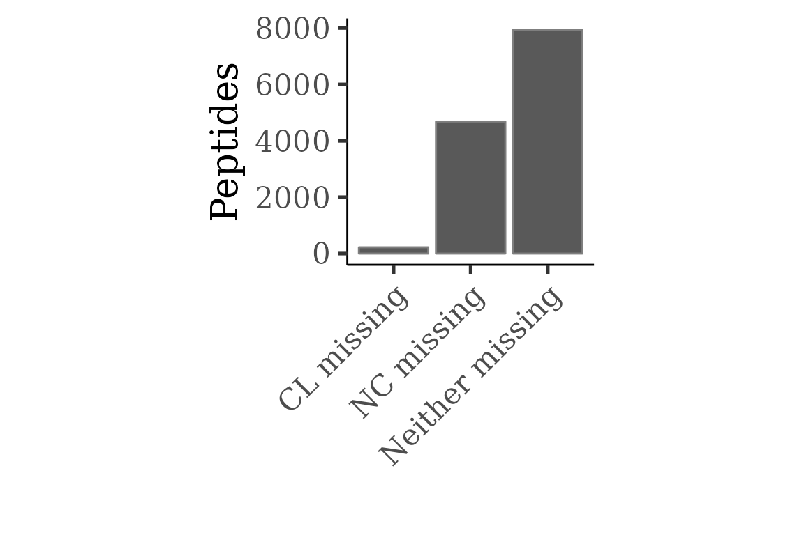
Exercise 1
Modify the code above so that rather than showing one bar each for every level of missing status, it shows a stacked bar for each replicate, where the fill denotes the missing status (see below for how it should look)
Solution
missing_tallies <- ratios %>%
group_by(Replicate, missing) %>%
tally()
missing_tallies %>%
ggplot(aes(x = Replicate, y = n, fill = missing)) +
theme_camprot(border = FALSE) +
geom_bar(stat = 'identity', position = 'fill') +
labs(y = 'Fraction', fill='')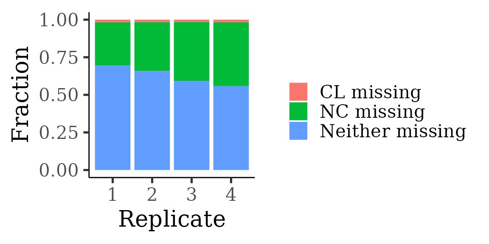
Given the large number of missing values, there is a concern that protein abundance in NC may be very low. Therefore, NC peptides identified by mass shift rather than peptide spectrum matching could be incorrect. Note that peptide sequences identified by PSM are referred to as having been ‘matched’ in some code blocks below.
To get the information about what quantification values come from PSMs, we need to interrogate the PSM-level output.
# These files are part of this package
psm_infiles <- gsub('_PeptideGroups.txt', '_PSMs.txt', pep_infiles)Below we use camprotR::silac_psm_seq_int to identify which quantification values are from PSMs.
psm_matched_data <- lapply(
psm_infiles, function(infile) {
infdata <- read.delim(
system.file("extdata", infile, package = "Proteomics.data.analysis"))
# If you export from PD including the 'Sequence' column,
# you don't need this step.
# Below, we convert the Annotated.Sequence column into a Sequence column
infdata$Sequence <- sapply(strsplit(infdata$Annotated.Sequence, split = '\\.'), '[[', 1) %>%
toupper()
camprotR::silac_psm_seq_int(infdata, sequence_col = 'Sequence')
}
)Then we bind together the spectrum matched data into one data frame, ready to merge with the peptide quantification.
all_psm_matched_data <- psm_matched_data %>%
names() %>%
lapply(function(rep_n) {
psm_matched_data[[rep_n]] %>%
mutate(Replicate = rep_n)
}) %>%
bind_rows()Below, we merge the quantification and PSM information and make new columns to describe whether the CL/NC quantification is from a PSM. Note that we need to update the Modifications and Sequence columns in the peptide-level output so they can be matched to the columns in the PSM-level columns.
# merge the matched information and add new columns for the CL/NC matched information
ratios_matched <- ratios %>%
# Update the modifications column for the peptide object so it
# doesn't include SILAC modifications
mutate(Modifications = remove_silac_modifications(Modifications, level = 'peptide')) %>%
# Update the sequence column to all uppercase
rowwise() %>% mutate(Sequence = toupper(Sequence)) %>%
# Merge with the sequenced information
merge(all_psm_matched_data,
by = c('Sequence', 'Modifications', 'Replicate')) %>%
# Add new columns with CL/NC matched information using the
# matched_Heavy and matched_Light columns and the label swap information
# (rep1/2, CL=H; rep3/4 CL=L)
mutate('Matched_CL' = ifelse(Replicate %in% 1:2, matched_Heavy, matched_Light),
'Matched_NC' = ifelse(Replicate %in% 1:2, matched_Light, matched_Heavy)) %>%
# And subset to these columns
select(Master.Protein.Accessions,
Sequence,
Modifications,
Replicate,
ratio,
CL,
NC,
Matched_CL,
Matched_NC,
missing)
# Add a single column to describe the matched information across the two conditions
ratios_matched <- ratios_matched %>%
mutate(
matched = interaction(Matched_CL, Matched_NC),
matched = factor(recode(matched,
'TRUE.TRUE'='Both spectrum matched',
'TRUE.FALSE'='CL spectrum matched',
'FALSE.TRUE'='NC spectrum matched'),
levels = c('Both spectrum matched',
'CL spectrum matched',
'NC spectrum matched'))
)Below, we consider how often the ratio comes from a peptide where both CL and NC were spectrum matched, or just one spectrum matched, and the other one therefore being by mass shift. Note that a minority of peptides have both CL and NC sequenced and the majority are just sequenced in CL.
# Tally the peptide match status
matched_tallies <- ratios_matched %>%
filter(is.finite(ratio)) %>%
group_by(Replicate, matched) %>%
tally()
# Plot as stacked bar plot
matched_tallies %>%
ggplot(aes(x = Replicate, y = n, fill = matched)) +
geom_bar(stat = 'identity', position='fill', colour = 'grey50') +
theme_camprot(border = FALSE) +
scale_fill_manual(values = get_cat_palette(3), name = '') +
xlab('Replicate') +
ylab('Fraction of peptides')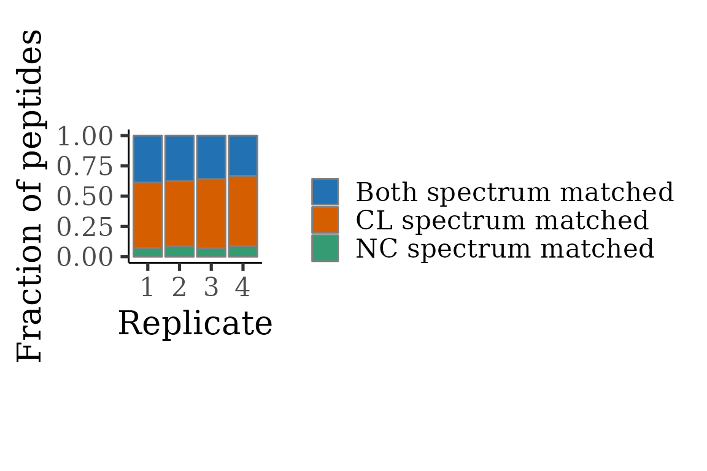
We can then see consider how the correlated between CL and NC relates to the ‘spectrum matched’ information. Note that when both CL and NC are spectrum matched, there are two clear populations, especially for replicates 1 & 2.
- CL == NC (on grey dashed line). These are the peptides not enriched by UV CL and therefore from non-RBPs
- CL >> NC (below grey dashed line). These peptides are heavily enriched by UV CL and therefore from RBPs.
When just CL is matched, the correlation is less clear and the two populations are not obvious. One plausible explanation is that many of the NC quantification values obtained when CL is identified by spectrum matching, but NC is identified by mass shift, are from ions erroneously assigned to a peptide. This would be a concern.
ratios_matched %>%
ggplot(aes(x = CL, y = NC)) +
geom_point(size = 0.5, alpha=0.5) +
geom_abline(slope = 1, linetype = 2, colour = 'grey50') + # line at CL==NC
theme_camprot(base_size = 15, border = FALSE) +
facet_grid(Replicate~ matched) +
scale_x_continuous(breaks = seq(14, 26, 4), limits = c(14, 26)) +
scale_y_continuous(breaks = seq(14, 26, 4), limits = c(14, 26)) +
xlab('CL (log2)') +
ylab('NC (log2)')
#> Warning: Removed 4762 rows containing missing values (geom_point).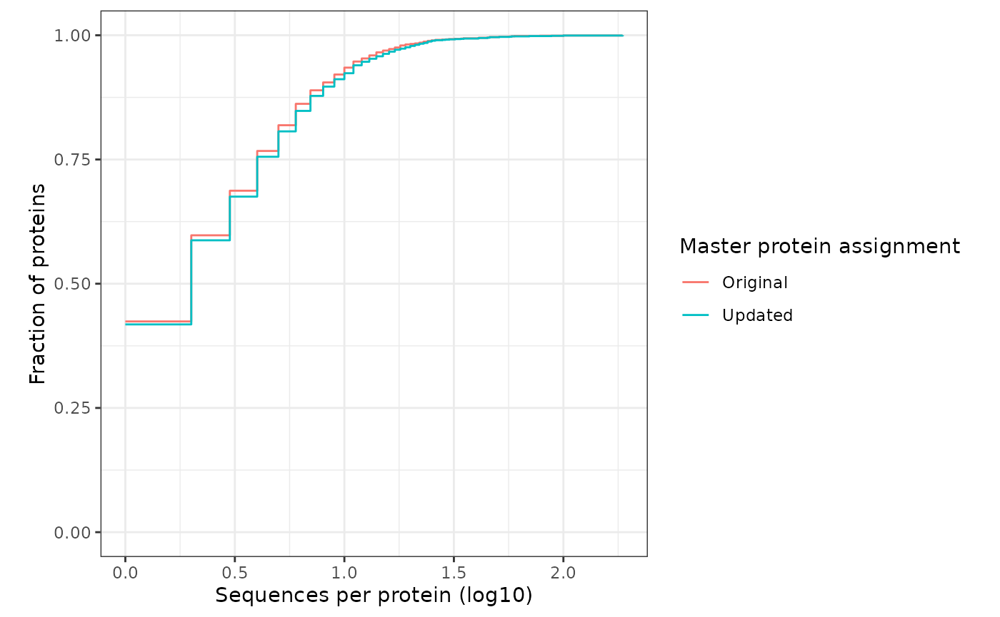
Below, we quantify the correlations
cl_nc_correlations <- ratios_matched %>%
filter(is.finite(CL), is.finite(NC)) %>%
group_by(matched, Replicate) %>%
summarise(cor = cor(CL, NC))
#> `summarise()` has grouped output by 'matched'. You can override using the
#> `.groups` argument.
cl_nc_correlations %>%
ggplot(aes(matched, cor, colour=Replicate)) +
geom_point() +
theme_camprot(border = FALSE, base_size=15) +
theme(axis.text.x=element_text(angle=45, vjust=1, hjust=1)) +
xlab('') +
ylab('Pearson correlation') +
scale_colour_manual(values=get_cat_palette(4))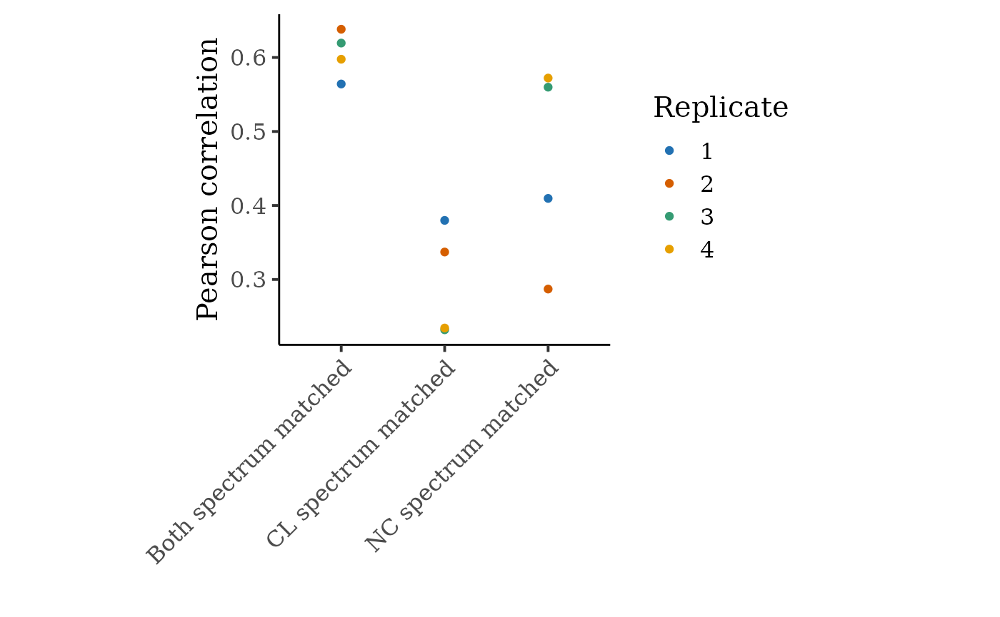
Whenever a SILAC experiment is performed where complete absence of a protein in one condition is likely, it is recommended to perform this QC step. If the correlation is very poor when just one condition is spectrum matched, it may be necessary to exclude these peptides.
In this vignette example, we will proceed with all the peptides, but retain information about the spectrum matching in the protein quantification, should we need to investigate this further.
Now, we want to make an MSnSet from the peptide-level CL/NC ratios. For this, we need to generate a matrix of quantification values (CL/NC ratios), where rows are features (peptides), and a separate data.frame with information about the features, e.g master protein assignment. See the vignette("msnset", package="camprotR") for more details about MSnSets.
Since each of the SILAC samples was processed separately, the assignments of peptides -> master proteins may not be consistent. This will cause issues when we try and create the MSnSet and we therefore need to update the master protein column.
camprotR::get_parsimony_pep2prot() will take a list of files, each with Sequence, Protein.Acession and Master.Protein.Accession columns and generate a unified peptide sequence to master protein assignment. This is done by an approximately parsimonous approach, which is not identical to PD. The function therefore also summarises the difference between the PD assignments and the updated assignment, which is normally very little.
read.delim(system.file("extdata", pep_infiles[[1]], package = "Proteomics.data.analysis")) %>% colnames()
#> [1] "Peptide.Groups.Peptide.Group.ID"
#> [2] "Checked"
#> [3] "Confidence"
#> [4] "Sequence"
#> [5] "Modifications"
#> [6] "Qvality.PEP"
#> [7] "Qvality.q.value"
#> [8] "Number.of.Protein.Groups"
#> [9] "Number.of.Proteins"
#> [10] "Number.of.PSMs"
#> [11] "Master.Protein.Accessions"
#> [12] "Protein.Accessions"
#> [13] "Number.of.Missed.Cleavages"
#> [14] "Theo.MHplus.in.Da"
#> [15] "Abundance.F26.Light.Sample"
#> [16] "Abundance.F26.Heavy.Sample"
#> [17] "Precursor.Quan.Result.ID"
#> [18] "Quan.Info"
#> [19] "Quan.Channel"
#> [20] "Found.in.Sample.in.S42.F26.Heavy.Sample"
#> [21] "Found.in.Sample.in.S26.F26.Light.Sample"
#> [22] "Confidence.by.Search.Engine.MS.Amanda.20"
#> [23] "Confidence.by.Search.Engine.Sequest.HT"
#> [24] "Percolator.q.Value.by.Search.Engine.MS.Amanda.20"
#> [25] "Percolator.q.Value.by.Search.Engine.Sequest.HT"
#> [26] "Percolator.PEP.by.Search.Engine.MS.Amanda.20"
#> [27] "Percolator.PEP.by.Search.Engine.Sequest.HT"
#> [28] "Amanda.Score.by.Search.Engine.MS.Amanda.20"
#> [29] "CharmeRT.Combined.Score.by.Search.Engine.MS.Amanda.20"
#> [30] "XCorr.by.Search.Engine.Sequest.HT"
#> [31] "Top.Apex.RT.in.min"
# Create a unified peptide sequence to protein assignment
new_seq_to_master <- pep_infiles %>%
lapply(function(x) system.file("extdata", x, package = "Proteomics.data.analysis")) %>%
camprotR::get_parsimony_pep2prot()
#> With original assignments, 1951 master proteins. With update, 1820 master proteins
#> Storing counts in `nn`, as `n` already present in input
#> Storing counts in `nn`, as `n` already present in input
#> Comparing Master Protein IDs
#> ℹ Use `name = "new_name"` to pick a new name.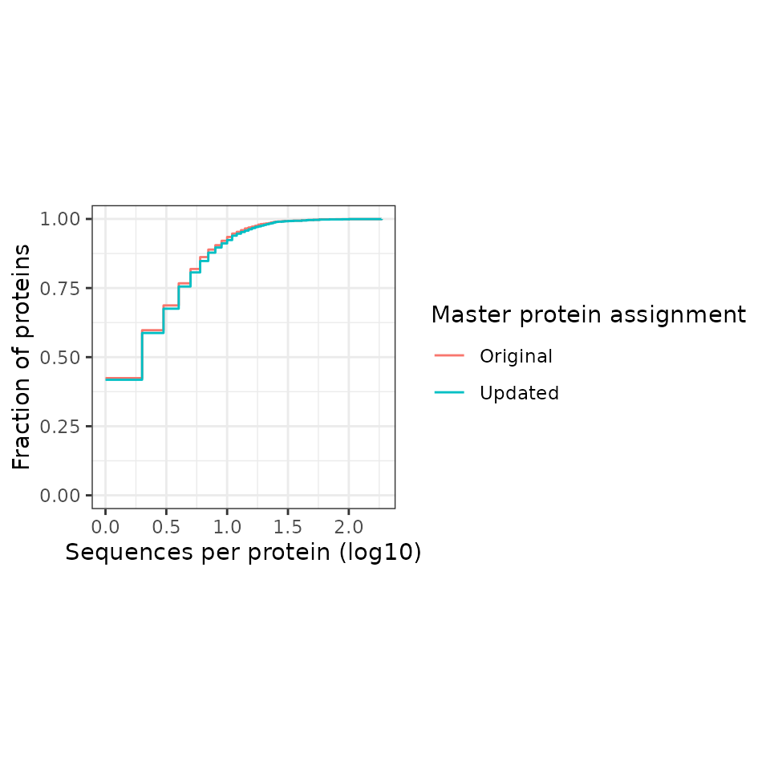
#> .
#> Different ID(s) Same ID(s)
#> 1188 18372
#> .
#> Different ID(s) Same ID(s)
#> 6.1 93.9
#> Updated:Multiple Updated:Single
#> Original:Multiple 106 629
#> Original:Single 384 18441
#> Updated:Multiple Updated:Single
#> Original:Multiple 0.54 3.22
#> Original:Single 1.96 94.28Next, we remove peptides without both CL and NC, e.g no quantified ratio, and then merge with the updated master protein assignments
# Remove peptides without both CL + NC quantified
flt_ratios <- ratios_matched %>%
filter(is.finite(ratio)) %>%
merge(new_seq_to_master, by='Sequence') %>%
# replace Master.Protein.Accessions with Updated.Master.Protein.Accessions
mutate(Master.Protein.Accessions=Updated.Master.Protein.Accessions)
# Create a wide table with unique ids as row names
flt_ratios_wide <- flt_ratios %>%
select(Master.Protein.Accessions,
Sequence, Modifications,
Replicate, Matched_NC, ratio) %>%
pivot_wider(names_from = "Replicate", values_from = c("Matched_NC", "ratio")) %>%
# Create an id column from the sequence and modification columns
unite(id, Sequence, Modifications, remove = FALSE) %>%
column_to_rownames(var = "id")
# Create expression matrix (exprs)
exprs_data <- flt_ratios_wide %>%
select(matches("ratio_[1-4]")) %>% # select unique ids and ratio data
as.matrix()
# Create feature metadata data frame (fData)
feat_data <- flt_ratios_wide %>%
select(!matches("ratio")) # select unique ids and everything but ratio data
# Create MSnSet
pep_res <- MSnSet(exprs = exprs_data,
fData = feat_data)
# Add replicate number to phenotype data
pData(pep_res)$Replicate <- 1:ncol(exprs_data)
pep_res
#> MSnSet (storageMode: lockedEnvironment)
#> assayData: 3839 features, 4 samples
#> element names: exprs
#> protocolData: none
#> phenoData
#> sampleNames: ratio_1 ratio_2 ratio_4 ratio_3
#> varLabels: Replicate
#> varMetadata: labelDescription
#> featureData
#> featureNames: AAAAAAAAAAAAAAAGAGAGAK_ AAAAAAAAAAGAAGGR_1xAcetyl
#> [N-Term] ... YYVTIIDAPGHR_ (3839 total)
#> fvarLabels: Master.Protein.Accessions Sequence ... Matched_NC_3 (7
#> total)
#> fvarMetadata: labelDescription
#> experimentData: use 'experimentData(object)'
#> Annotation:
#> - - - Processing information - - -
#> MSnbase version: 2.22.0Then we summarise the peptide-level ratios to protein-level ratios. Here, we’ll use the median.
prot_res <- combineFeatures(
pep_res,
groupBy = fData(pep_res)$Master.Protein.Accessions,
method = "median",
na.rm = TRUE
)
#> Your data contains missing values. Please read the relevant section in
#> the combineFeatures manual page for details on the effects of missing
#> values on data aggregation.
print(nrow(pep_res))
#> [1] 3839
print(nrow((prot_res)))
#> [1] 1128Note that the summarisation is occurring on the expression data, but will affect the feature data too (the values in the first feature are taken). If we want to retain information about whether the peptide was ‘matched’ in both conditions, we will need to generate this ourselves and re-attach to the MSnSet.
prot_matched_nc <- fData(pep_res) %>%
select(-Sequence, -Modifications) %>%
pivot_longer(cols = -Master.Protein.Accessions, values_to = 'Matched_NC') %>%
group_by(Master.Protein.Accessions) %>%
filter(!is.na(Matched_NC)) %>%
summarise(any_not_sequenced = any(!Matched_NC))
fData(prot_res) <- fData(prot_res) %>%
rownames_to_column(var = "id") %>%
left_join(prot_matched_nc, by = "Master.Protein.Accessions") %>%
column_to_rownames(var = "id")We can now inspect the completeness of our protein-level data using MSnbase::plotNA(). In this case 383/1128 proteins have complete data (all 4 replicates)
MSnbase::plotNA(prot_res, pNA = 0)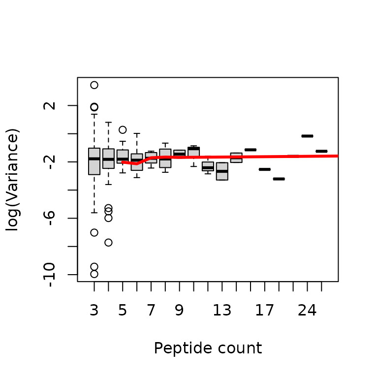
Exercise 2
We have used
MSnbase::plotNAto assess the missing values but it’s straightforward to do this ourselves directly from theprot_resobject. Remembering thatexprs()can be used to extract the abundance matrix from anMSnSet, answer the following:
- How many values are missing in total?
- What fraction of values are missing?
- How many missing values are there in each sample?
- How many proteins have exactly 1 missing value?
Solution
sum(is.na(prot_res)) #1
#> [1] 1732
mean(is.na(prot_res)) #2
#> [1] 0.3838652
colSums(is.na(prot_res)) #3
#> ratio_1 ratio_2 ratio_4 ratio_3
#> 466 472 364 430
table(rowSums(is.na(prot_res))) #4
#>
#> 0 1 2 3
#> 383 154 195 396To identify proteins with significantly increased abundance in CL vs NC, we will use DEqMS (Zhu et al. 2020), which you can think of as an extension of limma (Ritchie et al. 2015) specifically for proteomics.
The next step is taken from the DEqMS vignette. The idea is that we want to create an MArrayLM object as per normal limma analysis and then add a $count column to the MArrayLM object and then use the spectraCounteBayes function to perform the Bayesian shrinkage using the count column (which describes the number of pepitdes per protein) rather than the $Amean column (which describes the mean CL:NC ratio). In the DEqMS paper, they suggest that the best summarisation metric to use is the minimum value across the samples, so our count columns is the minimum number of peptides per protein.
dat <- prot_res %>%
filterNA(pNA = 0.5) %>% # select proteins in min. 2/4 reps
exprs()
design <- cbind(Intercept = rep(1, ncol(dat)))
fit <- lmFit(dat, design)
efit <- eBayes(fit)
protein_ratio_long <- prot_res %>%
exprs() %>%
data.frame() %>%
tibble::rownames_to_column('Master.Protein.Accessions') %>%
pivot_longer(cols=-Master.Protein.Accessions, values_to='protein_ratio', names_to='sample')
# Obtain the min peptide count across the samples
min_pep_count <- camprotR::count_features_per_protein(pep_res) %>%
merge(protein_ratio_long, by=c('Master.Protein.Accessions', 'sample')) %>%
filter(is.finite(protein_ratio)) %>%
group_by(Master.Protein.Accessions) %>%
summarise(min_pep_count = min(n))
# add the min peptide count
efit$count <- min_pep_count %>%
filter(Master.Protein.Accessions %in% rownames(efit$coefficients)) %>%
pull(min_pep_count)
# run DEqMS
efit_deqms <- suppressWarnings(spectraCounteBayes(efit))In this case the relationship between peptide count and variance is only really apparent when the minimum number of peptides from which a protein-level ratio is obtained is very low. Typically, one might remove quantifications where there is just a single peptide for a protein. Here, we will keep them, and we can refer to the count column in the final results object if we want to check the minimum numbber of peptides observed per sample.
# Diagnostic plots
VarianceBoxplot(efit_deqms, n = 30, xlab = "Peptides")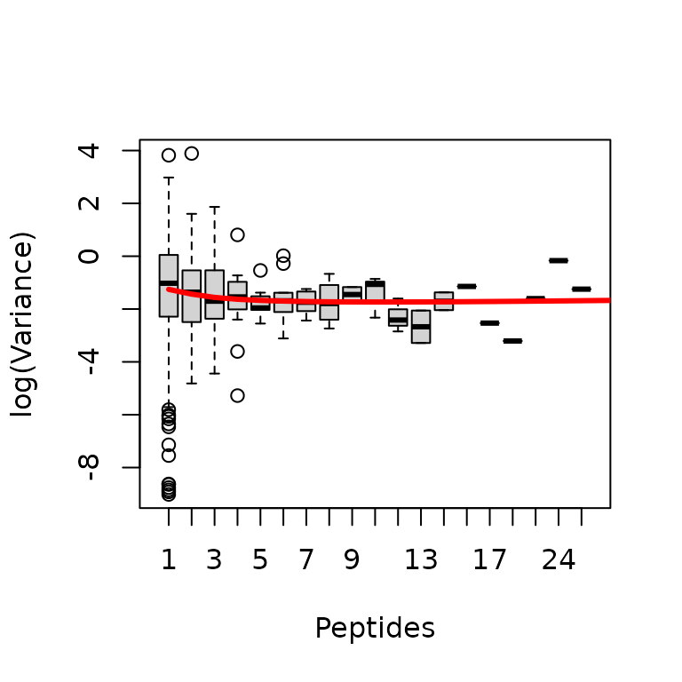
Below, we summarise the number of proteins with statistically different abundance in CL vs NC and plot a ‘volcano’ plot to visualise this. Note that all proteins with a statistically significant change are increased in CL, so the plot looks more like a fire-hose than a volcano!
deqms_results <- outputResult(efit_deqms, coef_col = 1)
table(ifelse(deqms_results$sca.adj.pval < 0.01, 'sig.', 'not sig.'),
ifelse(deqms_results$logFC > 0, 'Higher in CL', 'Lower in CL'))
#>
#> Higher in CL Lower in CL
#> not sig. 409 77
#> sig. 246 0
deqms_results %>%
ggplot(aes(x = logFC, y = -log10(sca.P.Value), colour = sca.adj.pval < 0.01)) +
geom_point() +
theme_camprot() +
scale_colour_manual(values = c('grey', get_cat_palette(2)[2]), name = 'CL vs NC Sig.') +
labs(x = 'CL vs NC (Log2)', y = '-log10(p-value)')
Finally, we can explore and, if we wish, export our results. Importantly, the $t, $P.Value and $adj.P.Val columnts are from limma. The columns prefixed with sca are the from DEqMS.
head(deqms_results)
#> logFC AveExpr t P.Value adj.P.Val B gene
#> P15880 5.843093 5.843093 28.13353 2.300892e-07 0.0001590016 7.528938 P15880
#> P22626 6.561859 6.561859 25.16140 4.344306e-07 0.0001590016 7.084582 P22626
#> Q13148 4.920545 4.920545 22.69799 7.802209e-07 0.0001607499 6.640967 Q13148
#> P43243 4.424089 4.424089 18.70247 2.336893e-06 0.0001607499 5.728685 P43243
#> P23588 5.250793 5.250793 20.13712 1.538278e-06 0.0001607499 6.088209 P23588
#> P84103 5.857123 5.857123 20.66152 1.329806e-06 0.0001607499 6.210104 P84103
#> count sca.t sca.P.Value sca.adj.pval
#> P15880 4 35.89893 4.910590e-08 3.594552e-05
#> P22626 7 29.58960 1.498581e-07 5.484808e-05
#> Q13148 1 24.37400 4.578182e-07 7.341608e-05
#> P43243 7 22.91838 6.522450e-07 7.341608e-05
#> P23588 3 22.86445 6.611324e-07 7.341608e-05
#> P84103 1 21.57023 9.237939e-07 7.341608e-05Krüger, Marcus, Markus Moser, Siegfried Ussar, Ingo Thievessen, Christian A. Luber, Francesca Forner, Sarah Schmidt, Sara Zanivan, Reinhard Fässler, and Matthias Mann. 2008. “SILAC Mouse for Quantitative Proteomics Uncovers Kindlin-3 as an Essential Factor for Red Blood Cell Function.” Cell 134 (2): 353–64. https://doi.org/10.1016/j.cell.2008.05.033.
Ong, Shao-En, Blagoy Blagoev, Irina Kratchmarova, Dan Bach Kristensen, Hanno Steen, Akhilesh Pandey, and Matthias Mann. 2002. “Stable Isotope Labeling by Amino Acids in Cell Culture, SILAC, as a Simple and Accurate Approach to Expression Proteomics*.” Molecular & Cellular Proteomics 1 (5): 376–86. https://doi.org/10.1074/mcp.M200025-MCP200.
Queiroz, Rayner M. L., Tom Smith, Eneko Villanueva, Maria Marti-Solano, Mie Monti, Mariavittoria Pizzinga, Dan-Mircea Mirea, et al. 2019. “Comprehensive Identification of RNA–Protein Interactions in Any Organism Using Orthogonal Organic Phase Separation (OOPS).” Nature Biotechnology 37 (2): 169. https://doi.org/10.1038/s41587-018-0001-2.
Ritchie, Matthew E., Belinda Phipson, Di Wu, Yifang Hu, Charity W. Law, Wei Shi, and Gordon K. Smyth. 2015. “Limma Powers Differential Expression Analyses for RNA-Sequencing and Microarray Studies.” Nucleic Acids Research 43 (7): e47. https://doi.org/10.1093/nar/gkv007.
Zhu, Yafeng, Lukas M. Orre, Yan Zhou Tran, Georgios Mermelekas, Henrik J. Johansson, Alina Malyutina, Simon Anders, and Janne Lehtiö. 2020. “DEqMS: A Method for Accurate Variance Estimation in Differential Protein Expression Analysis.” Molecular & Cellular Proteomics : MCP 19 (6): 1047–57. https://doi.org/10.1074/mcp.TIR119.001646.